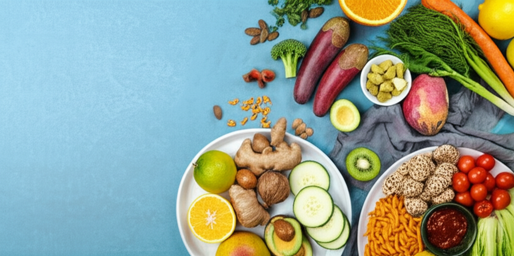

# 近期健康新聞摘要與分析 (2025-03-31)
## 引言
近期健康新聞涵蓋了高血壓、糖尿病腎病（DKD）、毒品防治以及突發公共衛生事件等多個方面。高血壓的診斷、控制、飲食管理以及新藥研發成為關注焦點。同時，糖尿病腎病治療的早篩策略也備受重視。此外，毒品防治宣導以及心血管疾病風險的預防也占據了一定的版面。整體來看，預防勝於治療的觀念深入人心，健康生活方式的推廣是主流趨勢。
## 主體內容
### 第一點：高血壓防治與管理
多篇文章集中討論了高血壓的流行現狀、飲食管理、藥物治療以及相關風險。網易新聞報導指出，高血壓存在未診斷率高和控制率低的問題，並強調了收縮壓控制的重要性。香港01則聚焦高血壓飲食，指出甜食比鹹食更易導致高血壓。關於藥物治療，網易新聞也報導了Lorundrostat在降低難治性高血壓患者血壓方面的積極作用。世界新聞網則推薦了四種有助於降低血壓的水果。此外，聯合新聞網的文章澄清了長期服用降血壓藥傷肝腎的誤解，強調血壓失控才是導致腎衰竭的主因。這些新聞共同表明，高血壓的管理是一個綜合性的過程，需要結合生活方式的調整、飲食的控制以及藥物的輔助。
### 第二點：糖尿病腎病（DKD）治療與早篩
全球生物醫藥月刊報導了全球DKD權威大師齊聚AASD年會，討論DKD治療和早篩策略。重點在於血糖、血壓、血脂的控制，以及早期篩檢和介入的重要性。這突顯了糖尿病患者腎臟保護的必要性，以及早期診斷和管理對於預防嚴重併發症的重要性。
### 第三點：公共衛生事件與健康生活方式
南投縣政府衛生局發布新聞稿，強調毒品防治，宣導健康生活方式。香港01的文章則提醒民眾，天氣變化可能增加心血管疾病風險，並提供三招降血糖控血壓的建議。這些新聞表明，除了慢性疾病的管理外，突發公共衛生事件的預防和健康生活方式的推廣同樣重要。
## 結論
近期健康新聞反映了人們對於慢性疾病預防和管理的日益重視。高血壓和糖尿病腎病的早期篩檢、綜合管理和新藥研發是熱門話題。同時，健康生活方式的推廣和公共衛生事件的預防也備受關注。未來，更需要加強健康教育，提高民眾的健康意識，並提供更完善的醫療服務，以應對日益嚴峻的健康挑戰。